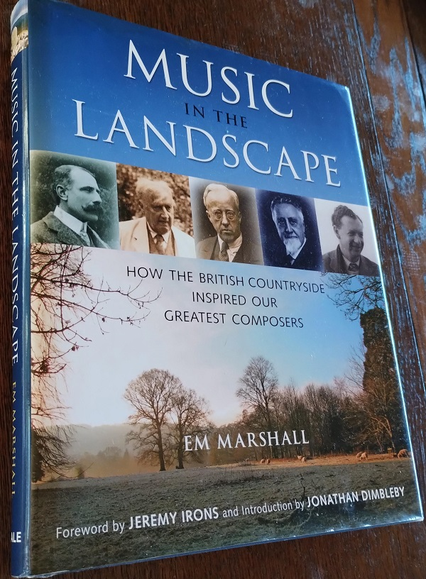

ボウエン: ヴァイオリンソナタ ホ短調
前回取り上げたバントックのヴィオラソナタが入ったアルバムは、イギリスのEM Recordsというレーベルのものだった。主にイングランドの作曲家をテーマとする音楽祭 "English Music Festival" の主催者であるEm Marshalが設立した比較的新しいレーベルで、その記念すべき第一作が下のアルバム。内容は比較的知られていない近代の作曲家3人のヴァイオリンソナタ集となっている。一作目から非常に挑戦的な選曲で、レーベル設立の意気込みがよく伝わってくる。
York Bowen: Violin Sonata
in E Minor, Op. 112
Rupert Marshall-Luck (vn)
Matthew Rickard (pf)
(2010)
アルバムのラストを飾るヨーク・ボウエンは、1884年ロンドン生まれ。バックスとは1つ違いで、アイアランドやブリッジとだいたい同世代になる。このヴァイオリンソナタは1945年の作とあるので、円熟期の手慣れた感じの作品と思われる。聴きやすく抒情的な曲だし一定の技巧的な派手さもあるが、ある程度集中して聴かないと気をそらされやすい面もあるようだ。

Em Marshalには "Misic in the Landscape" という著書（左）がある。5年ほど前に、イギリス音楽と風景の関係に興味を持って手に入れたのだが、エルガーからブリテンまで14人のイングランドの作曲家（加えてそれ以外の作曲家多数についての短い記述も含む）と景観との関わり合いを美しい写真とともに綴った力作である。音楽と風景といっても描写音楽ということではない。近代イギリス音楽をある程度聴き込んだ人ならたいていはこの相関について思いを馳せてしまうのではないだろうか。とはいえ作曲家のインスピレーションの源泉について分析するのは容易ではない。この本では作曲家がどういった場所で何をしたかを丹念に追うこと、作曲者の言葉を紹介することなどによって、材料を提供するという形を取っている。紹介される場所には多くの場合写真（一部はEM Recordsのアルバムジャケットにも使われている）が添えられているとはいえ、土地を知らない者にとって想像力を働かせられる余地は限られる。著者も序章で書いているように、風土というものは単なる切り取られた風景ではなく、季節ごとの気候や土地の歴史、人と言葉などの総合体であり、写真を見たり短時間の観光をするだけでは近づけないものである。イギリス近代音楽の謎はこの本を読んでもまだ謎のままであるし、それでも十分楽しめるのが音楽の良い所なのだから、あまり分析しようなどと考えず、聴けるだ聴いて、その上でこういう本の記述を手掛かりに若干の勝手な想像力を働かせたり修正したりするくらいが妥当な所なのかもしれない。
(Oct. 21, 2023)